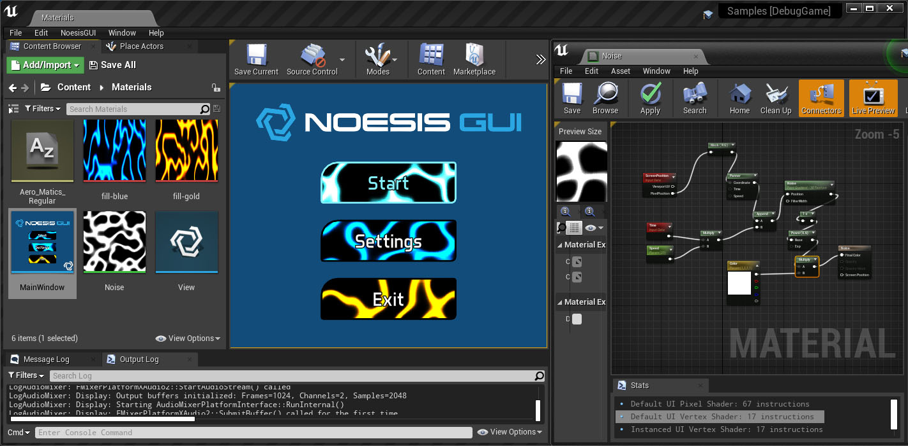
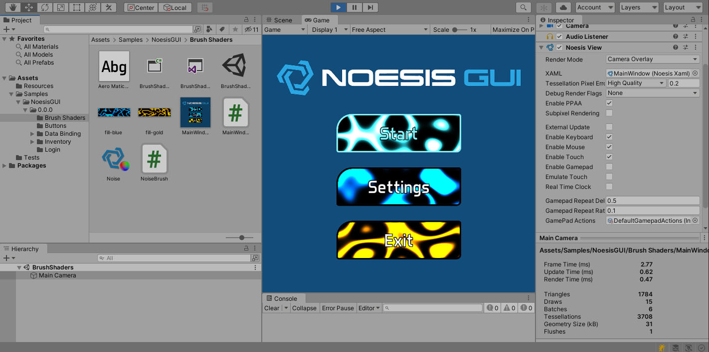
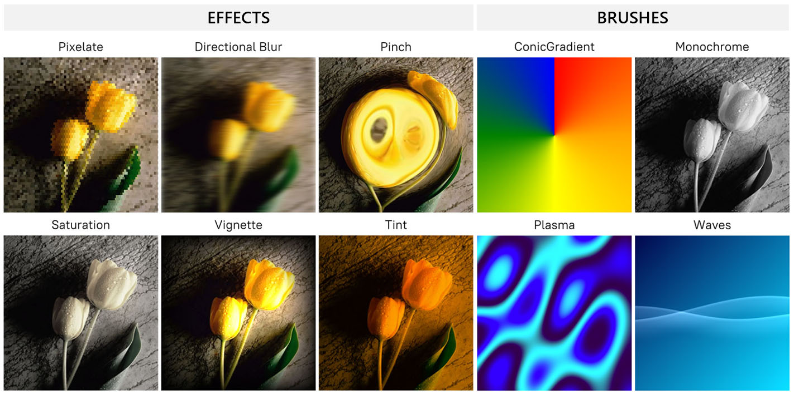
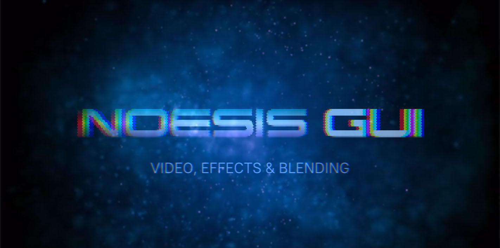
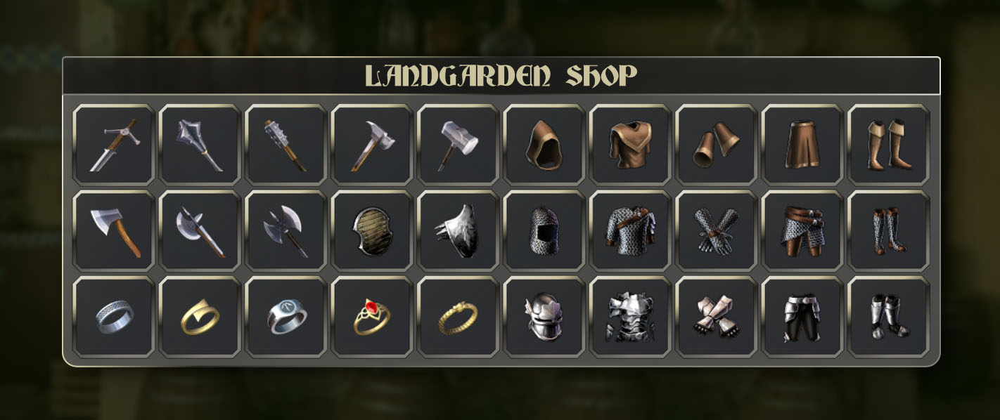
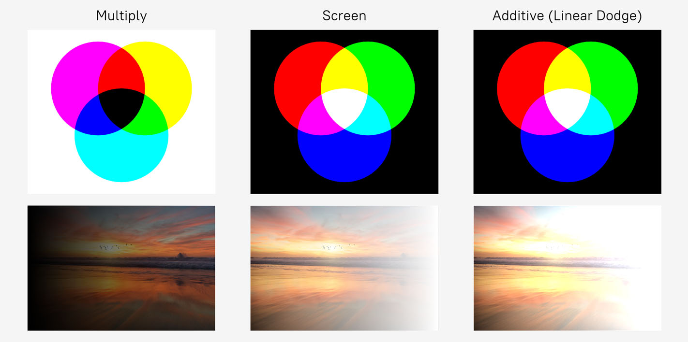

NoesisGUI 3.1 Release Notes
Version 3.1.7
Released 8 Feb 2023 - Download
- Enhancement Unreal Improvements and fixes:
- Removed uses of functions deprecated in UE5.1.
- Moved to using RenderPass resolves for multisampled RenderTargets.
- Used Memoryless textures where applicable.
- Improved RHI object debug naming.
- Fixed deprecated warning updating uniform buffers on Metal platforms.
- Enhancement App Xbox Series improvements:
- Support for disabling VSync.
- Validation layer enabled in Debug builds.
- Fixed when using Multisampling.
- Invalid state creating derived pipelines.
- GameCoreDisplay using 4K resolution if supported.
- Updates for latest SDK (October 2022).
- Enhancement Display::Close() for PlayStation and Xbox (#2366).
- Enhancement RenderDeviceGL doesn't have sRGB parameter in C# constructor (#2473).
- Enhancement Expose PS5 render device in C# (#2458).
- Enhancement Updated Menu3D sample so 3D transform doesn't depend on resolution.
- Fixed Crash in TSF when collapsing focused TextBox (#2492).
- Fixed LayoutUpdated was incorrectly reentering ProcessLayout (#2492).
- Fixed Binding converter errors not showing binding information (#2490).
- Fixed Crash destroying template with IsMouseOver triggers (#2475).
- Fixed AGCRenderDevice::UpdateTexture fixed for Srgb textures (#2493).
- Fixed Edit and Continue not working on the PS5 (#2376).
- Fixed C# Incorrect XSetWindowAttributes struct definition.
- Fixed Unity Meta file conflicts (#2489).
- Fixed Unity Texture corruption or crashes on built player (#2495).
Version 3.1.6
Released 18 Nov 2022 - Download
- Enhancement Unity Fixed compiler warnings in Unity 2022.1.
- Enhancement Unreal Support for UE5.1.
- Enhancement Implement UIElement LayoutUpdated event (#1041).
- Enhancement Added support for PropertyChanged("") to indicate all props changed (#2432).
- Enhancement Support for extra texture in custom Brush Shaders (#2435).
- Enhancement Support for Custom Animations (#2260, #2372).
- Enhancement Added localization helpers RichText and LocExtension markup. (#1963, #2355)
- Enhancement Localization sample updated with RichText and LocExtension.
- Enhancement App Restore focused element when MessageBox is closed.
- Enhancement C# Clock CurrentIteration, CurrentProgress and CurrentTime exposed as nullable (as in WPF).
- Enhancement C++ Implemented support for Tracy profiler.
- Fixed When using IME, TextBox cursor shown even though focus has moved to another TextBox (#2367).
- Fixed Assertion thrown when backspace key is pressed after long text is entered using IME (#2365).
- Fixed Thumb failing after losing mouse capture (#2374).
- Fixed Crash in GetXamlDependencies() when using unknown namespace (#2375).
- Fixed Crash clearing Inlines that have a binding.
- Fixed Crash destroying ItemsPresenter before its ScrollContentPresenter (#2384).
- Fixed Inline bindings not working when used inside a template ToolTip.
- Fixed Inlines connected to the View twice when added in TextBlock's AncestorChanged event.
- Fixed Kerning incorrectly applied between line breaks (#2388).
- Fixed Incorrect view stats when sharing renderer between views.
- Fixed Assert hit when showing/hiding the scrollbars in a ScrollViewer (#2390).
- Fixed DrawingCommands allocating when updating proxy.
- Fixed Allow using markup extension attached properties without the Extension suffix.
- Fixed Crash when clearing a collection that was bound in a DataTemplate.
- Fixed Crash removing a ScrollViewer with a pending layout invalidation.
- Fixed Duplicate user control x:Name causes incorrect binding (#2401).
- Fixed ScrollViewer not applying PanningMode when set with style in a template (#2400).
- Fixed ScrollChanged event missing the timing for ongoing scrolling input (#2408).
- Fixed Cursors not working on popups.
- Fixed Crash reloading xaml using the same name in a template Grid and outer Grid elements (#2419).
- Fixed GridSplitter crash pressing Escape key without doing a resize.
- Fixed Infinite recursion caused by self binding in VisualTreeInspector (#2426).
- Fixed Nothing rendered when a child has an undefined transform.
- Fixed TreeViewItem preventing directional navigation outside of the TreeView (#2422).
- Fixed MenuItem not receiving focus when inside TreeView or ListView (#2431).
- Fixed ContextMenu Placement intermittently not being respected (#2437).
- Fixed Gamepad Accept button not executing selected MenuItem.
- Fixed Crashes on Pixel 6/7-family devices running Android 13 (#2450).
- Fixed Hitting assert in Rect constructor when using LinearRectKeyFrame (#2398).
- Fixed Circular dependency produces memory leaks (#1287, #1338, #1153).
- Fixed Add an option to limit Inspector target local applications only (#2418).
- Fixed Inspector value provider combo box losing selected value when scrolling.
- Fixed Inspector 'edit value' and 'add item' buttons shown at the same time.
- Fixed C# Getter for dependency properties of type Type.
- Fixed C# Argument exception when using ref property (#2386).
- Fixed C# Crash in code-behind event handler called when control is destroyed.
- Fixed C# Can't register embedded resources error (#2463).
- Fixed C++ D3D11/12 MediaPlayer error when setting position while playing.
- Fixed C++ Inline enum reflection causes duplicate definition linker error (#2440).
- Fixed C++ Memory corruption in String::Replace() (#2462).
- Fixed C++ Support for rectangles and DPI scale in TextureProvider (#2373).
- Fixed C++ Crash in GLRenderDevice::DestroyBuffer() (#2414).
- Fixed C++ API collision with FindResource macro in windows headers.
- Fixed Unity The files in the API folder are missing their .meta files (#2378).
- Fixed Unity UI not rendering when camera clearing set to SkyBox (#2385).
- Fixed Unity Added "Injection Point" to Noesis View editor to control when UI renders (URP) (#2438).
- Fixed Unity Font Importer cannot be changed (#2377).
- Fixed Unity Crash when loading RenderDoc while a preview is active.
- Fixed Unity NoesisPostprocess causes the editor to get stuck (#2413).
- Fixed Unity Crash rendering WrapPanel (#2417).
- Fixed Unity Better support for Sprites used in XAML (#2351).
- Fixed Unity Preview editors not resizing correctly.
- Fixed Unreal Unable to run blueprint command when using CreateEvent node (#2363).
- Fixed Unreal Video issues in Unreal Engine 5 (#2416).
- Fixed Unreal Noesis widget blocks input for other UMG widgets or actor mouse over events (#2430).
- Fixed Unreal Changes to Application Resources xaml not setting the new dictionary (#2441).
- Fixed Unreal Set W/Notify Regression (#2464).
Version 3.1.5
Released 24 June 2022 - Download
- Feature Implement Storyboard Seek methods (#1484).
- Feature Added support for Int64 animations (#2339).
- Feature Implemented MouseBinding (#1161).
- Enhancement Support for '-enable-16bit-types' in DXC compiler (#2329).
- Enhancement Remote control with Xbox controller connected to PC (#2281).
- Enhancement Added CopyPixels method to retrieve the image bytes from a BitmapSource (#2349).
- Enhancement Improved virtualization warning message when panel is not wrapped in a ScrollViewer.
- Enhancement Exposed enumeration of font faces (#2140).
- Enhancement Unreal Changed Input Mode to "Game And UI" on "Add to Viewport".
- Enhancement Unreal Support for UE5.1.
- Enhancement Unreal Support for non PCH, non Unity builds.
- Enhancement C# Added support for automatic loading of assemblies and its resources.
- Fixed TextBlock not correctly aligned when bigger than its container.
- Fixed Popup contents cannot fill the entire screen (#2358).
- Fixed Some converters crashing when receiving null string pointer (#2319).
- Fixed Freeze resources in XAML missing (#824).
- Fixed Crash when parsing a single node XAML without the default namespace.
- Fixed Crash when applying animation values in TimeManager::Tick (#2317).
- Fixed Crash when sharing storyboards in different VisualStateGroups (#2297).
- Fixed GridViewHeaderRowPresenter not updated when ListView View changed.
- Fixed EventTrigger Actions throws an exception when created from code behind (#2345).
- Fixed InlineUIContainers not rendered after disconnecting TextBlock from the View (#2343).
- Fixed MultiBinding shows error messages when removing target from the visual tree (#2347).
- Fixed Crash in Metal renderer when using complex SVG paths (#2342).
- Fixed Shader compiler error - Intel HD (#2357).
- Fixed Crash mapping vertices in GL renderer (#2313, #2314, #2323).
- Fixed Assert failed - VGLContext::GetBatchGroupPaint (#2335).
- Fixed C++ App Win32Display calculating wrong width/height with DPI scale > 1.
- Fixed C++ App Win32Display audio thread paused when window going to background.
- Fixed C# Local providers not closing Stream and running into errors (#2338).
- Fixed C# Dispatcher thread check should be done in managed land (#2261).
- Fixed Unreal Incorrect FontWeight value when setting DefaultFontProperties.
- Fixed Unreal Crash removing NoesisInstance during a mouse event.
- Fixed Unreal Crash when using MPC-collections in a material (#2312).
- Fixed Unreal LevelToColorConverter not working.
- Fixed Unreal Issues with lazily loaded textures in Standalone play-in-editor mode.
- Fixed Unreal CustomVersion added to NoesisInstance and assets upgraded on load.
- Fixed Unreal Hot reload not always working for UserControls in the Content folder.
- Fixed Unreal Removed FreeType dependency from NoesisRuntime module.
- Fixed Unreal Removed forced load of the NoesisEditor module.
- Fixed Unity Dynamic changes to PPAA in NoesisView editor was broken.
- Fixed Unity Incorrect texture rect for automatically packed sprites (#2350).
- Fixed Unity Textures use twice the expected memory in Unity (#2352).
Version 3.1.4
Released 18 March 2022 - Download
- Enhancement Unreal 5.0-Preview 1 supported.
- Fixed ScrollViewer scroll not working if contained element has focus (#2303).
- Fixed Crash removing a Path previously collapsed and its Data set to null.
- Fixed VisualState value not applied when fired during initialization.
- Fixed C# Can't add points to PointCollection (#2308).
- Fixed Unreal Assert setting null Texture with w/NotifyChanged (#2306).
- Fixed Unreal Null FRHITextures crashing the Vulkan RHI.
- Fixed Unity Disabling Previews still creates the View (#2304).
Version 3.1.3
Released 4 March 2022 - Download
- Enhancement Video support on Switch (#2214).
- Enhancement Expose StringFormat and the global CultureInfo object (#2206).
- Enhancement Doc Our tutorials for Unity and Unreal have been improved.
- Enhancement C++ Better documentation of IRenderer and IView classes.
- Enhancement C# Added support for D3D12.
- Enhancement Unity Using custom ScriptableRenderPass with the Universal Rendering Pipeline.
- Enhancement Unity Emscripten updated to 2.0.19 (#2220, #2246).
- Enhancement Unity Toggle for automatic DPI scaling added to View (#2235).
- Enhancement Unity Support for dynamic DPI scenarios.
- Enhancement Unreal Support for storing XAML assets inside Plugin's Content (#1951, #1961).
- Feature Implemented VisualStateGroup events CurrentStateChanging and CurrentStateChanged (#2211).
- Feature Added MoveFocusAction to Interactivity package.
- Feature Unreal Added InputActionTrigger that can be used with Unreal InputActions (#2247).
- Fixed Text wrapping algorithm breaks words strangely (#2178).
- Fixed Collection properties of PathGeometry, PathFigure, PolyLineSegment and GradientBrush are null (#2229).
- Fixed Animations added to incorrect TimeManager sometimes.
- Fixed 3D UI interaction broken (#2202).
- Fixed StaticResourceExtension not in the public API (#2216).
- Fixed Text not clipped after being collapsed.
- Fixed Path not stretching when Viewbox expands (#2240).
- Fixed Incorrect Rectangle geometry when only setting one of RadiusX or RadiusY (#2236).
- Fixed TextBlock inlines not triggering Loaded and Unloaded events (#2237).
- Fixed x:Name shouldn't be used as key in Resources (#2231).
- Fixed Bindings in resources not resolving (#2234).
- Fixed ImageSourceConverter not working for Uri properties (#2268).
- Fixed PasswordBox inside a ListBoxItem loses focus (#2278).
- Fixed Crash on LoadComponent registering XAML for hot-reload (#2263).
- Fixed Inspector not showing selected View's XAML path (#2284).
- Fixed Deadlock when using SizeToContent="Height" (#2293).
- Fixed Window doesn't utilize available screen resolution on Switch (#2250).
- Fixed C# IDataObject is missing GetDataPresent() method (#2118).
- Fixed C# DataObject should be public and have a public constructor (#2119).
- Fixed C# Added UIElement TranslatePoint method (#2030, #2124).
- Fixed C# UIElement CaptureTouch/ReleaseTouchCapture should receive TouchDevice.
- Fixed C# Application FindResource not implemented (#2245).
- Fixed C# Missing libEGL.so.1 in Android (#2233).
- Fixed Unity Black screen when using the Universal Rendering Pipeline (#2219).
- Fixed Unity Compiler warnings because of files with the same name (#2227).
- Fixed Unity Texture provider incorrectly using Uri including the assembly (#2259).
- Fixed Unity Default font importer cannot be used (#2262).
- Fixed Unity Gamepad analog thumbstick cannot navigate dense UI (#2286).
- Fixed Unity Noesis not compiling when Unity.UI package not installed in the project (#2290).
- Fixed Unreal Issues when installing NoesisGUI as an Engine Plugin.
- Fixed Unreal Compiler errors building for Android.
- Fixed Unreal Android libraries not found for arm64 or x86_64.
- Fixed Unreal NoesisEnumWrapper ToString() returns index instead of entry name (#2266).
- Fixed Unreal Enum showing incorrect entry names (#2273).
- Fixed Unreal Importer unable to create references to assets (#2265).
- Fixed Unreal Compile error with ClassGeneratedBy variable in NoesisTypeClass (#2292).
Version 3.1.2
Released 22 Dec 2021 - Download
- Enhancement GridSplitter control implemented (#1601, #1870, #1990).
- Enhancement Adorner and AdornerLayer implemented (#2120).
- Enhancement Added support for custom cursors (#1109).
- Enhancement Switch to DXC shader compiler for much faster loading times on Xbox (#2093).
- Enhancement PropertyPath parser optimized to avoid heavy stack usage (#2131).
- Enhancement Video implemented for PlayStation (#2128).
- Enhancement Added support for .NET 5 and .NETCore 3.1 to Noesis.GUI.Extensions NuGet.
- Enhancement Unreal Add Set w/ NotifyChanged Blueprint actions for native variables.
- Enhancement Unreal Added support for nativized Blueprints.
- Enhancement Unreal Make UE4 plugin build without PCHs or Unity CPPs (#2189).
- Enhancement Unreal Added support for system fallback fonts in settings.
- Enhancement Unity Added XAML snippets to 'Tools->NoesisGUI->Create' menu.
- Enhancement Unity Added support for Camera Stacking in both URP and HDRP (#1826, #2046, #1669).
- Enhancement Unity Improved performance of URP and HDRP renderer (#2005).
- Enhancement Unity Massive improvement to import process times (#2210).
- Enhancement Unreal Unity Separate filter settings for General and Binding log levels.
- Enhancement Unreal Unity Inspector disabled in non-development builds.
- Fixed Crash reloading textures after TextureProvider recreated.
- Fixed Images not working with hot-reload when size changed (#2115).
- Fixed Frozen image resources not working with hot-reload (#2117).
- Fixed Window background not rendered when not using application framework.
- Fixed Incorrect rendering of nested opacity groups not fitting in atlas texture.
- Fixed Crash destroying D3D12 media player after playing an audio only media.
- Fixed Alpha transparency not applied on grayscale images with alpha (#2153).
- Fixed Crash adding visual to a parent not connected to the view (#2114).
- Fixed ActualWidth/Height should get its value from RenderSize.
- Fixed Background glitches when animated from blurred state (#2151).
- Fixed TabControl produces "Visual is null" error messages (#2106).
- Fixed {x:Null} is not a valid type for TextDecorations dependency property (#2161).
- Fixed ComboBox KeyboardNavigation.DirectionalNavigation="Cycle" not working (#2177).
- Fixed PageUp/PageDown keyboard navigation not working in ComboBox dropdown.
- Fixed ItemsControl keyboard navigation failing with disabled/hidden containers.
- Fixed ContentPresenter with a ContentTemplate binding is not displaying the content (#2086).
- Fixed Crash finishing VisualState animations (#2111).
- Fixed Assert in TimeManager removing a pending storyboard (#2183).
- Fixed Cannot animate named freezable in a template (#2187).
- Fixed Freezable objects inside templates not registered in the NameScope (#1476).
- Fixed Direct3D MediaPlayer crashing when loading a video with unsupported audio format.
- Fixed Crashing issue in D3D12 with Intel drivers (#2150).
- Fixed Incorrect assert logic in Vector and String (#2134).
- Fixed Unable to parse big numbers with <sys:UInt32> (#2136).
- Fixed Software Keyboard not opening when tapping on a focused TextBox or PasswordBox (#2159).
- Fixed Avoid binding errors when part of the path is null (#2200).
- Fixed Gaps when using TileBrush ViewBox with TileMode=None.
- Fixed Glitch rendering on Apple M1 devices.
- Fixed Hot-reloading was initializing elements before setting its properties (#2210).
- Fixed BindingOperations SetBinding() can return a destroyed expression.
- Fixed TargetedTriggerActions not firing on rare cases.
- Fixed Rendering artifacts after tabbing in TabControl (#2217)
- Fixed App View not resizing when window Restored or Maximized (#2165).
- Fixed App AppKitDisplay incorrectly resizing on High DPI displays.
- Fixed Unreal Crash in NoesisNotifyArrayPropertyChanged when wrapper not available (#2126).
- Fixed Unreal Added extra validation to SetPropertyByRef (#2130).
- Fixed Unreal Incorrect use of NotifyDictionaryChangedAction_Add on remove notification.
- Fixed Unreal Crash when trying to play audio during shutdown.
- Fixed Unreal Videos not working properly after being paused (#2148).
- Fixed Unreal Crash importing XAML with system fonts (#2158).
- Fixed Unreal No way to call RaiseCanExecuteChanged for wrapped commands (#2213).
- Fixed Unity Resource providers are case sensitive (#2135).
- Fixed Unity Improvements to upgrade process (#2141).
- Fixed Unity DropShadowEffect not working in PS5 builds (#2190).
- Fixed C# Crash destroying ItemsPresenter after ScrollContentPresenter.
- Fixed C# OnApplyTemplate should be public to match WPF.
- Fixed C# Missing ItemsControl container virtual methods (#2004).
- Fixed C# MediaElement Source Uri different from the one received by XamlProvider (#2129).
- Fixed C# Exposed Visual child management protected methods.
- Fixed C# Unable to start application in Linux .NET 5 (#2147).
- Fixed C# Assembly reload broken (#2121).
- Fixed C# .NET assemblies not loaded when parsing XAML (#1016, #1283, #1320).
- Fixed C# Crash extending GridViewColumnHeader (#2212).
- Fixed C# Crash when registering duplicated DependencyProperty (#2201).
Version 3.1.1
Released 15 Sep 2021 - Download
- Enhancement Added Xbox One using GDK. XDK has been deprecated.
- Enhancement Implemented caching of pipelines in D3D12 renderer.
- Enhancement Recommended NintendoSDK upgraded to 12.3.7+.
- Enhancement Doc Our tutorials for Unity and Unreal have been improved.
- Enhancement C# Implemented TemplatePartAttribute (#2007).
- Enhancement C# Implemented StyleTypedPropertyAttribute (#2009).
- Enhancement C# Implemented DependencyProperty AddOwner() (#2013).
- Enhancement C# Added missing FrameworkElement virtual method OnApplyTemplate (#2008).
- Enhancement C# Added support for file and http schemas in Uris.
- Enhancement Unity Improvements to Unity package upgrade
- Old xaml and font .asset automatically deleted.
- Proper importer assigned to each xaml and font.
- Enhancement Unity Added menu entry to generate a Blend project from an existing Unity project (#2100).
- Enhancement Unity Improvements to log (#2076).
- Allow logging from different Unity threads.
- Render thread messages sent to specific platform log.
- Enhancement Unreal Plugin updated to UE4.27.
- Fixed Grid doesn't layout according to star column definition (#2078).
- Fixed Crash in StaticResource and DynamicResource using Type keys for unknown types (#2077).
- Fixed Custom types with namespace in x:Key not supported.
- Fixed TextBlock not including correct height of InlineUIContainer (#2066).
- Fixed IsVisible property default value should be false (#2064).
- Fixed More than one caret visible sometimes (#2096).
- Fixed Crash changing selection in ComboBox (#2090).
- Fixed Assert when stopping a Storyboard (#2063).
- Fixed Projection matrix set in View not affecting hit test (#2089).
- Fixed Merged dictionaries inside templates not loading (#2101).
- Fixed Loaded event not recognized in DataTemplate Triggers (#2107).
- Fixed Adding a StringFormat using Blend results in incompatible code (#2104).
- Fixed StringFormat=0.## produces 0.5 for 0.05 (#2070).
- Fixed Memory leak when removing TextureProvider before releasing last BitmapImage (#2105).
- Fixed Changes to ToolTipOpening and ToolTipClosing events to match WPF (#2102)
- Fixed Make ScrollInfo available for ScrollViewer's inheritors.
- Fixed Crash using cached type converter while parsing a XAML.
- Fixed Incorrect rendering when blending in linear mode (#2085).
- Fixed Black textures due to GL renderer mipmapping issues.
- Fixed Stroked text with null foreground not rendered.
- Fixed Opacity groups bigger than offscreen texture incorrectly clipped.
- Fixed Sample applications crashing when resized (#2098).
- Fixed Random crash when updating textures on D3D12 renderer.
- Fixed C# Crash defining GridLength dependency property (#2084).
- Fixed C# Allow resize of DynamicTextureSource.
- Fixed C# DynamicTextureSource callback not executed when creating multiple instances.
- Fixed C# MediaPlayer Create() receiving string instead of Uri (#2072).
- Fixed Unity Nintendo Switch GPU crash during offscreen rendering (#2094).
- Fixed Unity Crash switching scenes (#2088).
- Fixed Unity Editor keeps reimporting all XAMLs all the time after upgrading to 3.1 (#2077).
- Fixed Unity Fonts defined with assembly in the Uri failing to load after upgrading to 3.1 (#2103).
- Fixed Unity Update process checking now if the package was incorrectly installed (#2099).
- Fixed Unity Unity's Texture used in TextureSource rendered with black background.
- Fixed Unity Updated Noesis Settings guid to avoid conflicts with previous version asset.
- Fixed Unreal Incorrect rendering of fonts.
- Fixed Unreal Crashes with TextInputMethodSystem (#2079).
- Fixed Unreal Crash adding variables in Sequence Director (#2083).
- Fixed Unreal InputScope property on TextBox not working (#2068).
- Fixed Unreal Stack overflow when processing dependencies with invalid Uris.
Version 3.1.0rc2
Released 26 Jul 2021 - Download
- Fixed Unity Linking error when using WebGL platform.
- Fixed Effects working on UWP platforms.
Version 3.1.0rc1
Released 23 Jul 2021 - Download
- Enhancement Unity Support for automatic loading of system font fallbacks (Asian unicodes and emojis).
- Enhancement Unity Updated plugins for Nintendo Switch, Xbox Series X|S, PlayStation 4 and PlayStation 5.
- Enhancement App Display and Renderer implementation for Xbox Series X|S.
- Fixed Rendering glitches in PlayStation 4.
Version 3.1.0b5
Released 21 Jul 2021 - Download
- Enhancement C# Noesis.GUI.Extensions using official Microsoft.Xaml.Behaviors.Wpf package.
- Enhancement C# Improvements to the performance of event handling.
- Enhancement C# Deprecated OnPostInit and DependencyPropertyChanged callbacks to be more WPF compliant.
- Enhancement C# Avoid calling callbacks if virtual methods are not overridden.
- Enhancement C# Exposed dependency property enumeration in DependencyObject for automation.
- Enhancement C++ Added extra tables and enums to RenderDevice.
- Enhancement C++ Removed stride from Batch structure in RenderDevice.
- Enhancement Samples updated to latest Noesis.GUI.Extensions.
- Fixed Crash clearing event binds during shutdown (#2061).
- Fixed Issue with constant buffer updates in D3D11 and UWP apps.
Version 3.1.0b4
Released 14 Jul 2021 - Download
- Enhancement Unity C++ Experimental support for D3D12 (#1819).
- Enhancement Unity Switch/NVN renderer support (#2048, #2058).
- Enhancement Unity Set DPI scale when creating Views.
- Enhancement C++ Added helper tables to RenderDevice API: VertexShaders, VertexFormats and VertexSizes.
- Enhancement C++ Stride information added to renderer Batch structure.
- Enhancement Exposed Placeholder property in TextBox, PasswordBox and ComboBox to use in code.
- Enhancement Support for AppleTV.
- Fixed Glitch in upsample shader.
- Fixed View perspective matrix incorrectly depending on viewport height.
- Fixed UI does not react to changes in MergedDictionaries of the ApplicationResources (#2056).
- Fixed Grid not checking for NaN in IsDesiredSize method.
Version 3.1.0b3
Released 2 Jul 2021 - Download
- Feature New Unreal features. Read the tutorial for more information.
- Support for custom Brushes using Unreal Materials. See our Materials sample.
- Support for custom Effects using Unreal Materials. See our VideoEffect example.
- Added new Blending Modes. See our VideoEffect example.
- Native support of MediaSources for playing Video using MediaElement. See our VideoEffect example.
- Sprites are now supported in DataContexts and accessible to ImageSource properties in XAML using data-binding. See our Inventory sample.
- Added support for binding Map properties, and improved native DataContext integration with support for getter/setter properties and command properties.
- All the improvements included in 3.1 Core are also available for Unreal.
Version 3.1.0b2
Released 1 Jul 2021 - Download
- Feature New Unity features. Read the tutorial for more information.
- NoesisGUI is now a package that must be installed using the Package Manager. The previous package, located at 'Assets/NoesisGUI' must be deleted before installing the new version.
- XAMLs assets are now implemented using a Scripted Importer. This means that we no longer need the corresponding .asset file for each .xaml. You must delete all .asset files belonging to .xaml resources if you are upgrading your project. References to XAMLs from current views must also be recreated.
- Fonts are also implemented using a Scripted Importer. In this case we are overriding the default font importer used by Unity. Sames as with XAMLs, you must delete all .asset files belonging to .ttf resources.
- NoesisSettings.asset has been deprecated and must be removed. When first installing NoesisGUI 3.1, a new Noesis.settings.asset will be created. This new asset is very similar to the legacy one but no longer needs to be stored inside a Resources folder.
- Sprites are now supported in DataContexts and accessible to ImageSource properties in XAML using data-binding. See our Inventory sample.
- Implemented gamepad events using the new Input System Package. Note that for keyboard, mouse and touch we still need the legacy Input System.
- All new features like Videos, Blending Modes and Shaders included in 3.1 Core are also available for Unity. See our examples VideoEffect and BrushShaders.
- Hot-reloading while in Play mode is now always enabled.
Version 3.1.0b1
Released 14 Jun 2021 - Download
Feature Implemented support for custom shaders. There are two ways where custom shaders can be used in NoesisGUI. Effects (preview) apply a post-processing shader to any object including children. On the other hand, Brushes (preview) can be customized to define how elements are filled and stroked. More information in the Extending with Shaders tutorial.
Feature Added compatibility with MediaElement to display video content. MediaElement requires a platform dependant implementation of MediaPlayer. Our application framework provides an implementation for each renderer. A new example was added to the SDK showcasing this feature. We also added the following media actions: PlayMediaAction, PauseMediaAction, RewindMediaAction and StopMediaAction.
Feature CroppedBitmap implemented. With CroppedBitmap, atlases can be defined in a ResourceDictionary. These sub-images can be later rendered using standard Images (preview). Atlases also support now all combinations of tiling modes.
Feature New blending modes supported: Multiply, Screen, Additive (preview). This is an extension to WPF.
Enhancement Better performance of BlurEffect and DropShadowEffect by using Gaussian pyramids instead of the traditional two-passes approach. For large radius, performance has been improved by an order of magnitude.
Enhancement We have a new Tessellator that is much faster and avoids dynamic allocations. You should observe a significant reduction in allocations coming from Noesis with this new implementation.
Enhancement Added support for drawing Lines, Rectangles and Ellipses to DrawingContext. New Custom Render tutorial and example.
Enhancement Boxing operations are now much faster and close to constant performance even on different threads.
Enhancement IView::SetScale changes the DPI scale value. Default is 1.0 which corresponds to 96 pixels per inch. All Display implementation in our Application Framework are now system DPI aware.
Enhancement D3D12 reference device renderer implemented.
Enhancement Added support for PlayStation 5.
Enhancement Added support for Xbox Series X.
Enhancement Added support for Apple M1.
Enhancement Added support for Emscripten 2.0.
Enhancement Point3D, Point4D and Int32Rect types added. Added support for Point3D animations.
Enhancement Providers receive now a Uri object with assembly and path information (#1569).
Enhancement Multi-touch handling improvements:
- Manipulations and Touch events are now handled independently. This is a deviation from WPF explained in our Touch and Manipulation tutorial. With this change, Controls implementing Touch events will behave correctly under ScrollViewers.
- All controls adapted to this new Manipulations behavior. A few of them like ListBoxItem, ListViewItem and TreeViewItem are now reacting to TouchUp events instead of TouchDown.
- Touches used for manipulations are now damped for smoother movements.
- Menu, ContextMenu and ComboBox popups now correctly close under touch scrolling.
- Sliders with IsMoveToPointEnabled can now continue dragging without releasing the mouse or finger.
- Tapped and Holding events are now always raised on the original source, as in WPF.
Enhancement App FileTextureProvider is now automatically generating mipmaps for each loaded image. Our renderer implementations are now using a texture lod bias of -0.75 to reduce blurriness caused by mipmaps.
API Breaking Changes:
- If you are implementing a custom RenderDevice, please read our RenderDevice API document.
- As explained above, implementing Touch events no longer disables Manipulation events.
- GUI::Init no longer receives license information, it must be passed to GUI::SetLicense.
- Providers are now receiving Uris instead of Strings.
- Horizontal mouse wheel is no longer triggered by clicking Shift key.